You can search for a matter via the tabs on the left side of the screen:

- All
All created matters will be shown. - Active
Active matters are all opened and being worked on. - Inactive
Inactive matters are all closed. Nobody is working on them. - Checked-out
Checked-out matters can be open (active) or closed (inactive), but only the person who has checked a matter out can open it. - Checked-out by me
Checked-out by my matters are matters from the logged-in user. They can be open (active) or closed (inactive). Only the logged-in user can open and work on them.
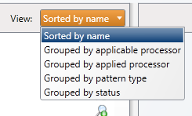
- Sorted by name
Items will be sorted alphabetically. - Grouped by applicable processor
Items are grouped by applicable processor. The same item can be added to more than one processor. - Grouped by applied processor
- Grouped by pattern type
Items are divided between four groups: Extensions, MIME types, Processors output and Unknown types. - Grouped by status
Items are divided between two groups: Unhandled (not yet linked to a processor, with yellow warning sign) and OK (linked to a processor).
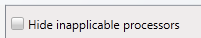
- Tiff Producer (Tiff)
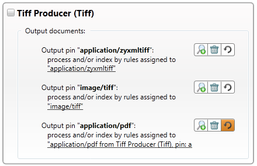
Will create a multi-page TIFF (Tagged Image File Format) graphic file of for example PDF files with images. The TIFF will be OCRed and searched as full-text. The Tiff Producer also supports document classification (based on textual content, lay-out and some more variables), barcode recognition, enhanced images and it handles password protected files. - Tiff Producer (ZyXmlTiff)
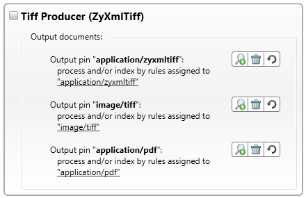
Will create a multi-page TIFF graphic file and recognize it as text using Optical Character Recognition (OCR) so that you no longer need to process a file twice. The Tiff Producer (ZyXmlTiff) is multi-threaded, making it possible to run multiple Tiff Producer actions simultaneously on one system. The Tiff Producer also supports document classification (based on textual content, lay-out and some more variables), barcode recognition, enhanced images and it handles password protected files. - Embedded Object Extractor
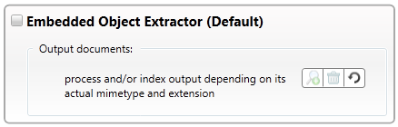
Will extract embedded objects from files for further processing. For example, you can extract an embedded zip file from an Excel worksheet, extract images from an MS Word document (after which the images can be OCRed and searched full-text) or you can extract Portfolio and PDF files with embedded objects. - Archive Extractor
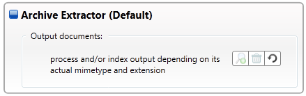
Will extract all files from several archive types like: zip, rar, tar, iso, cab, 7z and many more. The output can be used for further processing. For more information, see Archive Extractor. - Field Appender
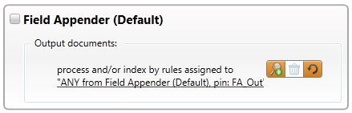
Will allow users to append properties to the metadata fields of each file. The output of the Field Appender is a full copy of the original file with slightly modified metadata.
In the Field Appenders XML configuration file 3 parts can be configured. For more information, see Field Appender. - Forensic Extractor
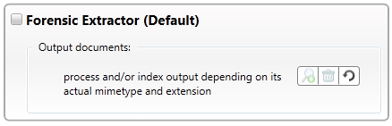
Will extract Encase Files.
A forensic image is created of a folder or entire disc with files, using the File System Collector. The output consists of one or more files with different extensions, like: .e01, .e02, .e03? or .001, .002, .003. These files will be extracted. The extracted files will then be processed based on the configured processing rules. - Text Extractor
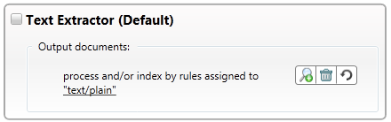
Will create a text file with the contents of the file including document properties. - EML Converter
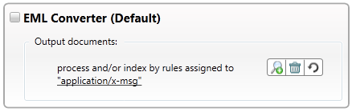
Will convert Lotus Notes emails to MS Outlook emails which can be processed by the MSG Converter. - MSG Converter
Will extract attachments and copy metadata into XML Wrappers. Attachments can be processed further. For example, images can be OCRed. - NSF Extractor
Will extract Lotus Notes emails, calendar items, contacts, tasks, etc. from the NSF archive to be processed by the MSG Converter. - PST Extractor
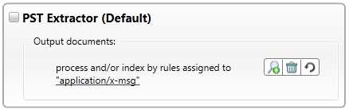
Will extract MS Outlook emails, calendar items, contacts, tasks, etc. from the PST archive to be processed by the MSG Converter. - OCR Processor
Will recognize the pixels of images (TIF, JPEG, etc.) as text (OCR: Optical Character Recognition), so the files can be searched full-text.

However, manual editing of the XML file is preferred as it is not possible to create every valid DeletingList via the User Interface. For more information, see Local Processing (XML file).
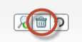